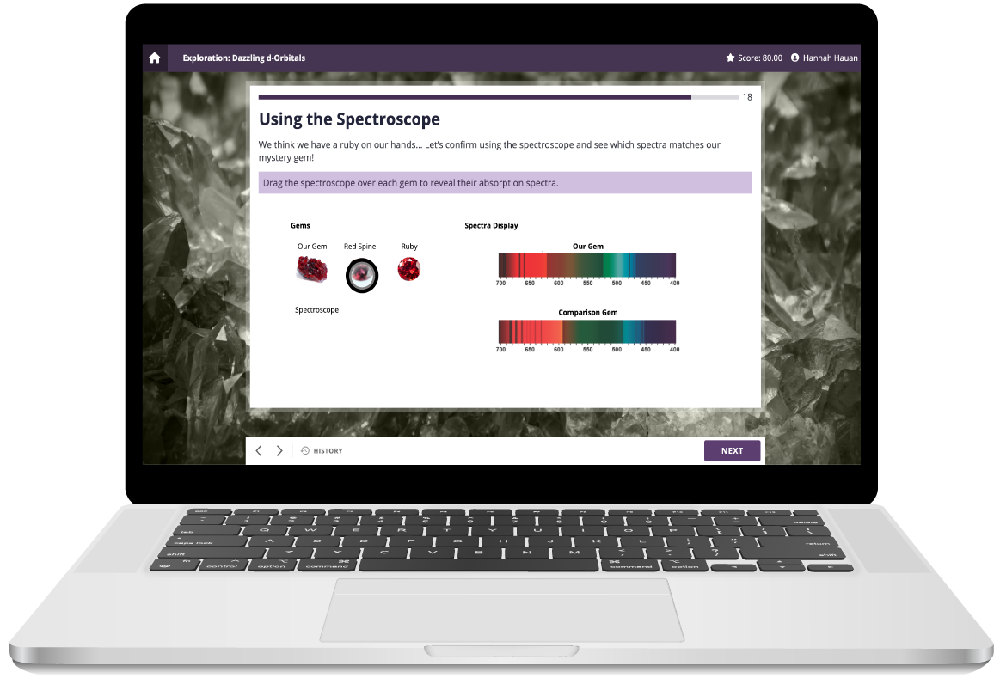
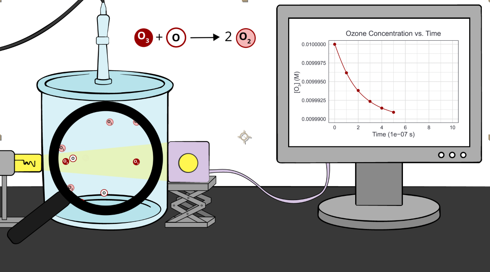
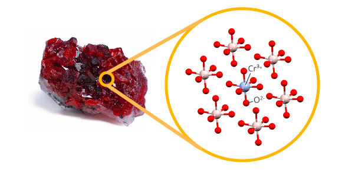
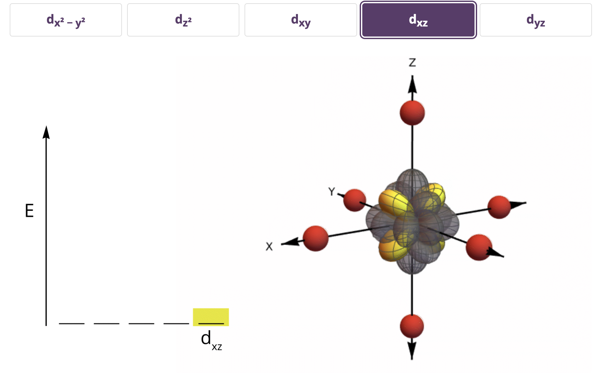
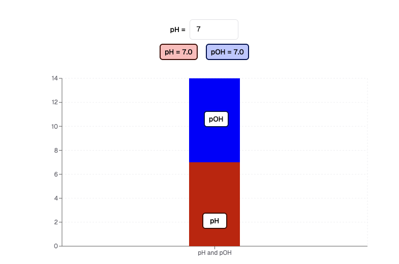
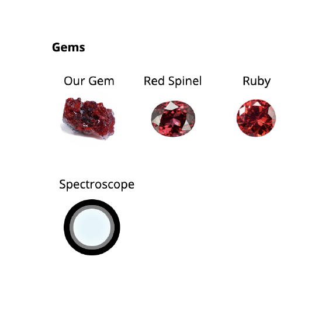
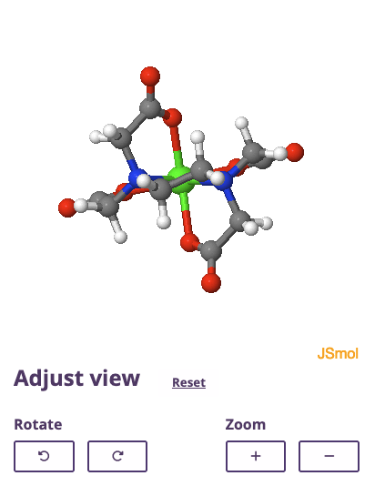

Learning Design & Development
I designed engaging explorations that make Chemistry relevant to everyday learners.
The REAL CHEM II project has been proven to increase student retention rate from 75% to 92%. Learners using REAL CHEM scored two letter grades higher on exams, with scores rising from 42% to 61%.
Many learners go through chemistry by memorizing just enough to pass exams, but they leave the course without lasting understanding. REAL Chem wants to change that.
Design and develop explorations - short, interactive eLearning activities that close each module of the online course. Each exploration was designed to evaluate learning, reinforce understanding, and spark curiosity.
Backward Design, Usability Testing, Accessibility Audits
Proton (our learning development platform), Figma, Adobe Illustrator, Adobe After Effects, ChatGPT, Github, Visual Studio Code
Lead Designer (Learning Design and Development, Widget Development, Animation, UI Design)
REAL CHEM II covers Chemistry 2 at the collegiate level. Am I a Chemistry expert? No. I worked with a brilliant team to guide the design process for our 30 minute Explorations at the end of each module.

Learners investigate how catalysts influence ozone degradation and connect molecular reactions to global environmental change.

Learners apply concepts like equilibrium constants and ICE tables to choose the best chelation therapy for removing toxic lead from their patients bloodstream.

Learners explore different regions of the body to see how pH affects biomolecules involved in pain signaling, digestion, and nutrient absorption.

Learners use crystal field theory to help an archaeologist determine whether a mystery gemstone is a ruby or a red spinel.
As lead designer, I brought chemistry to life by storyboarding, illustrating, and animating short videos that turned complex concepts into engaging stories for learners. And yes... that's me narrating them as well!
These projects allowed me to combine learning design with coding, building widgets that transformed complex ideas into interactive, learner-driven experiences. The most exciting part of building widgets is making them keyboard and screen reader accessible.

d-orbitals widget
pH widget
spectroscope widget
molecule widget